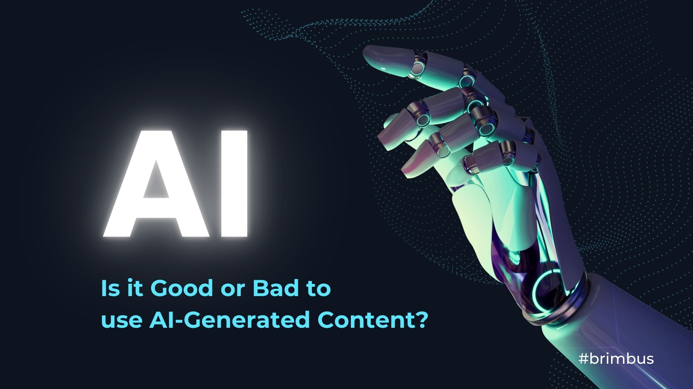

Artificial Intelligence (AI) refers to the simulation of human intelligence in machines that are programmed to think, learn, and act like humans. It is a broad field within computer science that focuses on creating systems capable of performing tasks that would typically require human intelligence.
AI can be broken down into several key aspects:
The process of acquiring data and creating algorithms that allow machines to learn from it. This is often done through methods like machine learning (ML) and deep learning.
AI systems can make decisions and solve problems by processing information and applying logic. This involves rules, logic, and decision-making algorithms.
AI uses sensors, such as cameras and microphones, to interpret and understand the world around it. This includes image recognition, speech recognition, and other sensory inputs.
AI can understand and generate human language through techniques such as Natural Language Processing (NLP), enabling machines to interact with people in a meaningful way.
After perceiving and reasoning, AI can take actions in the physical or digital world. This could involve making recommendations, playing games, or controlling autonomous systems such as self-driving cars.
Overall, AI allows machines to execute tasks that would normally require human intelligence, ranging from everyday applications like voice assistants (e.g., Siri, Alexa) to advanced systems that make complex decisions, such as autonomous vehicles and medical diagnostics.
Watch Video on AICreating AI involves several key steps that guide you from conceptualization to deployment. Here's a breakdown of the process:
Before building an AI model, you must first clearly define the problem you want the AI to solve. Whether it's image recognition, natural language processing, or any other task, having a clear objective is crucial.
Data is the foundation of AI. You'll need large, relevant datasets to train your model. Data preparation involves cleaning the data, handling missing values, and transforming the data into a format suitable for training.
There are various algorithms to choose from, depending on the problem you are trying to solve. Some popular types of algorithms are supervised learning, unsupervised learning, and reinforcement learning. Each algorithm has its strengths based on the use case.
In this step, you'll use the prepared data to train your model. The model will learn from the data by adjusting its internal parameters to minimize errors. This process can take time and requires high computational power for large datasets.
After training the model, you need to evaluate its performance. This involves testing the model on a separate dataset (the test set) to see how well it generalizes to new data. Metrics like accuracy, precision, recall, and F1 score are commonly used to evaluate AI models.
If the model's performance isn't satisfactory, you'll need to iterate. This can include tuning the algorithm, adjusting hyperparameters, or even gathering more data to improve the model's performance.
Once the model is trained and evaluated, it's time to deploy it in a real-world environment. This could mean integrating it into an application, website, or even running it on an IoT device.
This process is an iterative one, and you may find yourself going back to earlier steps as you refine your model. Successful AI development requires time, experimentation, and ongoing improvement.
AI can be broadly categorized into three types:
AI offers numerous benefits, including:
Despite its benefits, AI also raises concerns:
To ensure AI is used responsibly, several strategies can be implemented: